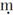
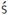
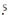
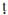
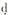

读者阅读本书时不时会遇到这样的引文标注，例如：“D.ii 95”等等。这些是指佛教经典，特指早期佛教正典的巴利文经卷学会文本。其标注规则例释如下：首个字母指称结集佛陀说法的经文典藏之一，即
罗马数字“ii”则指卷数，而阿拉伯数字“95”是页数。因此“D.ii.95”就是指“《长部》第二卷第95页”。还会碰到少量引文包括前缀“Vin-”，即“律”，都是关乎禅院寺庙清修生活的规条戒律。全部巴利文正典悉由巴利文经卷学会译成各种语言出版，而其他更近期的译文则在“作者推荐书目”中列出。
佛经成文和传播的过程所涉及的语言文字包括巴利文、梵文、藏语、泰语、缅甸语、汉语、日语以及朝鲜语。根据习惯，但凡引用经文术语，或用巴利文或用梵文。本书中多用巴利文，除非梵文形式已为英语接纳，诸如“karma”（羯磨）和“nirvana”（涅槃）等等。专名拼写若在其他文本中习见（如Ashoka）亦将保持原貌。重要概念术语凡巴利文和梵文互见者，皆以括弧示之。
梵文和巴利文的拼写均需使用助音符号，如“ā”和“

”等等，皆因英文二十六个字母不足以摹写亚洲语言如许大量之字符。元音之上的短横（长音符号）意为长音，如此则“ā”读如“far”中而非“fat”中的元音。其余助音符号对读音影响不大，可以忽略不计。以下则属于例外：
或
读如“sh”，例如在“shoes”中；辅音下的点（比如

、
等）表示发音时舌尖触到上腭，有印度口音的人发来，好似英文腔调。